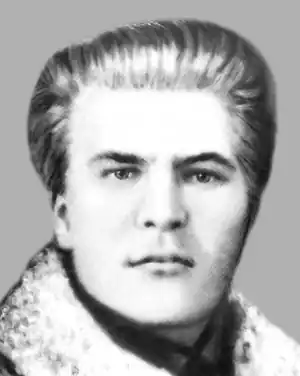

Справжнє прізвище Бендюженко. Народився 29.10.1900 р. в с. Лозоватці на Черкащині. Злигодні дозволили йому закінчити лише чотирикласну школу, а далі здобувати знання самотужки. Разом з батьком займається сільським господарством. У 1920 р. вступає до Червоної армії, стає політруком.
Правда, у судовій "справі" фігурують відомості, що Бендюженко служив "у Петлюри штабістом", а також у Денікіна і навіть у банді Гризла.
С. Бен належав до спілки письменників "Плуг", але найбільший вплив на становленні молодого поета відіграли поети-неокласики, насамперед Микола Зеров і Павло Филипович. У 1920-х роках поезії С. Бена часто друкувалися в журналах "Плужанин", "Червоний Шлях", "Життя й Революція", "Нова Громада", "Глобус". Олександр Филипович, брат Павла, згадував: "Восени 1923 р. він вперше приїжджає до Києва, входить в коло українських літератів і зразу знаходить признання свого поетичного хисту. На літературному вечорі в Академії Наук М. Зеров зачитує кілька його віршів, оскільки сам автор, тоді ще соромливий селюк, не зважився виступити перед столичною авдиторією. За рік С. Бен знову їде до Києва з метою вступити на літературний факультет Університету, але, незважаючи на те, що він мав відрядження від села і вступні іспити склав, політична комісія знайшла його кандидатуру невідповідною і прийняти відмовилась. Голова цієї комісії (з вибраного народу), дізнавшись, що Бендюженко поет, запитав його: "Скажіть, будь ласка, як ви відбивали революцію в своїй творчості?" – на що дістав відповідь: "Наскільки я її відчував – настільки й відбивав". Оцього "наскільки – настільки" було досить, щоб вирішити долю поета і перетяти йому шлях до науки. Обурений і пригнічений він повертається до Лозоватки, одержує посаду вчителя в початковій школі сусіднього села і в сільській тиші продовжує свою поетичну діяльність. У 1929 р. виходить з друку збірка його поезій "Солодкий Світ". На жаль, тільки світ цей авторові недовго був солодким. На початку 1930-х років, коли входить у дію заплянований Москвою розгром українського духовного життя і починається цькування і масове нищення української інтелігенції, як у місті, так і на селі – чаша ця не минула і С. Бена". Арештували його у 1929 р. чи то за зв'язки з СВУ (так свідчить довідка сільради), чи за агітацію проти колективізації, і протягом трьох років він відбував заслання на Крайній Півночі. Повернувшись додому, вчителював спочатку в Лозоватці, а потім у с. Княже на тій же Звенигородщині. У 1930-х р. за наклепницькими доносами його починають знову переслідувати. Тому в 1931 р. він виїжджає до м. Ігарки, де завідує початковою школою, згодом переїздить в Карелію. Але його тягне до рідних місць. І 1933 р. С. Бен вступає до Черкаського інституту соціального виховання. Проте, через матеріальну скруту залишає навчання. З 1934 р. працює вчителем української мови та літератури в с. Княже. Багато пише, але ніде не друкується, готує до видання другу збірку віршів, думав дати їй назву "Ластівки на клуні". Бен писав і прозові твори, які, на жаль, не збереглися. Вдруге заарештували С. Бена 27.07.1937 р. в його рідній хаті, "як активного члена контрреволюційної націоналістичної шпигунської повстанської організації", котра ставила за мету повалення радянської влади. Під час арешту й обшуку було вилучено "12 зошитів із замітками і віршами і 3 блокноти з віршами". На жаль, усі вони втрачені. Ніяких побачень з ним не дозволяли, рідним забороняли навіть виїздити з Лозоватки. Постановою НКВС СРСР від 22.10.1937 р. він був засуджений до розстрілу. Його розстріляли 1.11.1937 р. о 24 годині у Черкасах разом з 32-ма іншими "лозоватськими контрреволюціонерами".